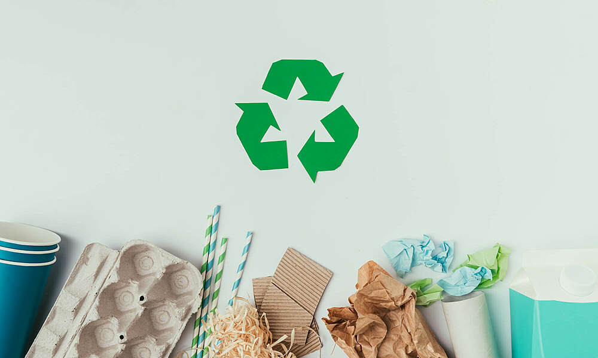
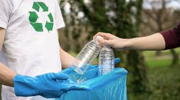

En ECOFFICE, transformamos desechos en productos de oficina de alta calidad hechos con materiales reciclados, combinando funcionalidad y responsabilidad ambiental. Nuestra misión es reducir el consumo de recursos vírgenes y minimizar desechos en vertederos. Promovemos una economía circular, inspirando a personas y empresas a optar por un futuro más sostenible. Con cada producto, buscamos educar sobre el impacto de nuestras decisiones en el planeta.
Misión


Visión
En ECOFFICE aspiramos a ser un referente global en sostenibilidad, liderando el sector de productos de oficina con la reutilización de materiales. Nuestra visión es un mundo donde los residuos impulsen nuevas creaciones y el reciclaje sea esencial para el crecimiento. A largo plazo, buscamos que todas las empresas adopten prácticas sostenibles, minimizando su impacto ambiental y considerando el ciclo completo de vida de cada producto, sentando así las bases para un futuro más consciente y respetuoso con el medio ambiente.